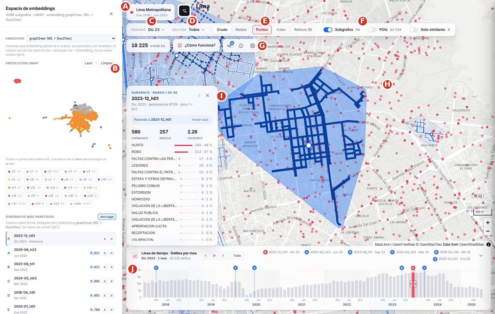
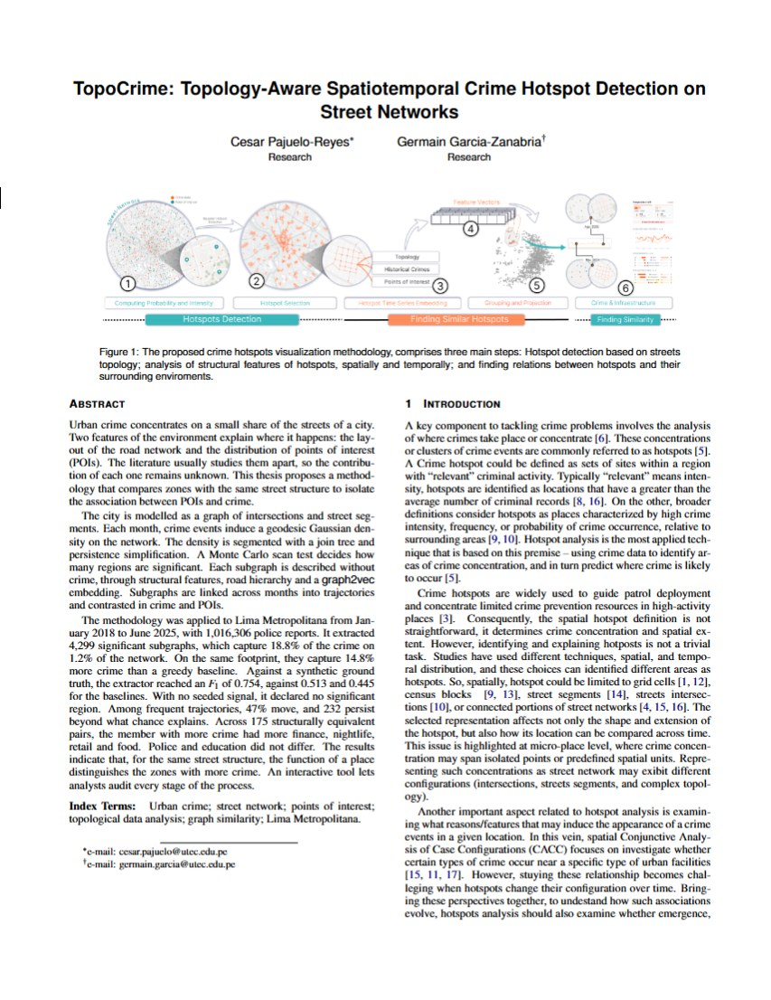

Sustentación de tesisCiencia de Datos · UTEC
TopoCrime: Topology-Aware Spatiotemporal Crime Hotspot Detection on Street Networks
↓ ↓ espacio avanzar · F pantalla completa
Contexto
Los hotspots guían el patrullaje y la prevención.
(Braga et al., 2019; Chainey et al., 2019; Weisburd, 2015)
Desafío C1 · representación
(Chainey et al., 2008; García-Zanabria et al., 2022; Rosser et al., 2017; Weisburd et al., 2009). Subgrafos de red: (Buchin et al., 2009; Shiode y Shiode, 2013, 2020)
Desafío C2 · dinámica
Se expanden, se contraen, se desplazan, desaparecen y reaparecen: su topología cambia en el tiempo.
(Shiode y Shiode, 2013; Weisburd et al., 2009)
Entorno urbano
Ningún diseño compara zonas con la misma estructura vial.
CACC: (Hart y Miethe, 2015; Summers y Caballero, 2017). Topología: (Davies y Johnson, 2014; Hillier, 1996; Summers y Johnson, 2017). Integración: (He et al., 2026)
Formulación
Marco teórico: (Brantingham y Brantingham, 1993; Cohen y Felson, 1979)
Objetivos
Evaluar cómo los puntos de interés y la topología vial se relacionan con la distribución espacial del crimen en Lima.
Dataset auditable sobre la red
Subgrafos conexos + test de scan
Líneas base, verdad sintética, nulo
Descriptor estructural sin crimen
Contraste emparejado de POIs
Entorno de visual analytics
OE1 · Ingesta
Fase 1 · Grafo vial
Snapping en dos pasos: arista más cercana (índice espacial en UTM), luego su extremo más cercano.
Red vial: (Boeing, 2017; OpenStreetMap contributors, 2025)
Fase 1 · Campo de densidad
dG: Dijkstra truncado en 3σ, lanzado solo desde nodos con ct(s) > 0.
(Dijkstra, 1959; Xie y Yan, 2008)
Fase 1 · Salida
Región inducida en G, ordenada por Λ: su forma es medible.
Fase 1 · Segmentación topológica
Barrido descendente con union-find sobre los conjuntos de supernivel. Cada región es conexa por construcción.
(Carr et al., 2003; Doraiswamy et al., 2014; Edelsbrunner et al., 2002)
Fase 1 · Scan de Kulldorff en red
Nulo: crimen uniforme sobre V. Comparar contra el máximo controla las comparaciones múltiples.
(Dwass, 1957; Kulldorff, 1997; Shiode y Shiode, 2020)
Fase 1 · Selección
Candidatas ordenadas por Λ; pasan las que superan el umbral del nulo.
OE3 · Verdad sintética
Escala medida en Lima, sobre la red real. Métricas sobre puntos cada 30,48 m de arista.
(Mann y Whitney, 1947; Shiode y Shiode, 2020)
OE3 · Datos reales
Líneas base BFS (voraz y en anchura) desde los nodos más calientes, con la misma huella.
Nulo sin señal: 0 zonas significativas.
OE3 · Sensibilidad
σ fija la escala mínima resoluble. El método domina a las líneas base en todo el rango.
Fase 2 · Descriptor estructural
Test: perturbar el crimen deja φ idéntico bit a bit.
(Le y Mikolov, 2014; Narayanan et al., 2017; Shervashidze et al., 2011)
Fase 2 · Similitud
(Blondel et al., 2008; Costa y Tokuda, 2022; McInnes et al., 2018)
Fase 3 · Emparejamiento
Distancia estructural baja y razón de crimen alta; pares sin miembros repetidos.
Fase 3 · Contraste emparejado
Wilcoxon de rangos con signo dentro del par · Benjamini–Hochberg.
(Benjamini y Hochberg, 1995; Wilcoxon, 1945). POIs: (OpenStreetMap contributors, 2025)
Resultados · cobertura
Resultados · trayectorias
Enlace mes a mes por IoU ≥ 0,2 (gap ≤ 3). Nulo Poisson-binomial por cobertura mensual.
Generalización
config.yaml; σ, α y fmin calibrablesEn Chicago se corrió con top-20 fijo por mes, antes del test de Monte Carlo.
Datos: (City of Chicago, 2026). Red y POIs: (Boeing, 2017; OpenStreetMap contributors, 2025)
OE6 · Visual analytics

Difusión


Conclusiones
A igual estructura vial, el crimen se asocia a actividades que concentran personas y dinero.
Coherente con la teoría de actividades rutinarias (Brantingham y Brantingham, 1993; Cohen y Felson, 1979)
Limitaciones → trabajo futuro

Gracias
César Eduardo Pajuelo Reyes · Asesor: Germain García-Zanabria
Referencias
Datos de Lima: denuncias de la Policía Nacional del Perú, 2018–2025.